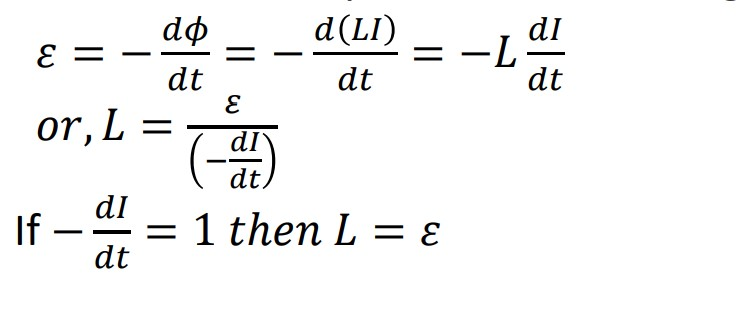
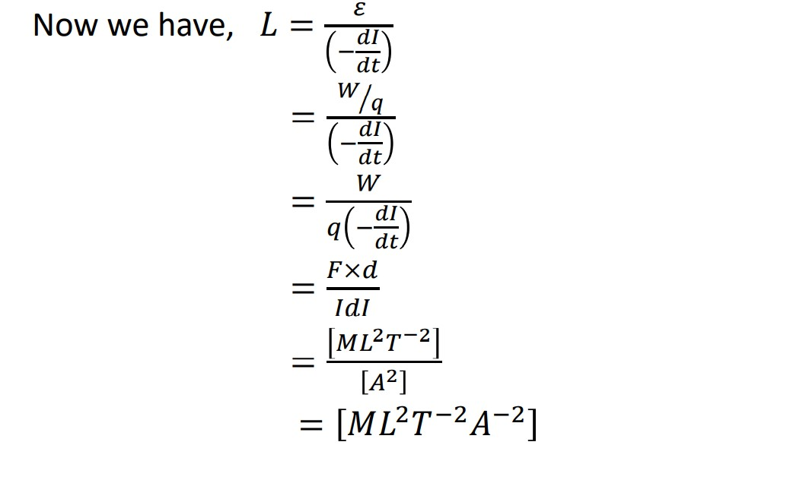
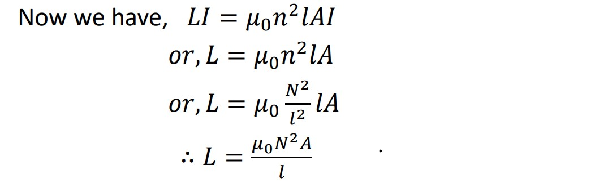

Self inductance -GRADE-12 PHYSIC
Notes
12-Physics-syllabusSelf-inductance
Self inductance
It is the property of coil by virtue of which it opposes the growth or decay of current flowing through
it.
If I is the current flowing through a coil then experimentally it is found that the magnetic flux 𝜙
linked with the coil is proportional to the current flowing
𝑖𝑒,𝜙 ∝ 𝐼
𝑜𝑟,𝜙 = 𝐿𝐼;
where L is proportionality constant known as coefficient of self induction or self inductance.
Now from Faraday’s law of electromagnetic induction

Hence, coefficient of self induction is defined as the induced emf in the coil if rate of decrease in
current in the coil is unity. Its unit is henry H in SI units.
Dimension formula of L:

Factor affecting the self inductance:
suppose a solenoid a long solenoid of length 𝑙, cross sectional area A and number of turns per unit
length n. If I is the current flowing through solenoid then magnetic field produced inside the coil is
𝐵 = 𝜇o𝑛𝐼
The total number of turns in a solenoid is 𝑁 = 𝑛𝑙.
So, the total magnetic flux linked with the solenoid 𝜙 = 𝑁𝐴𝐵 = 𝑛𝑙𝐴𝜇o𝑛𝐼 =
𝜇o𝑛2𝑙𝐴𝐼
Also, the magnetic flux linked with the coil is 𝜙 = 𝐿𝐼
